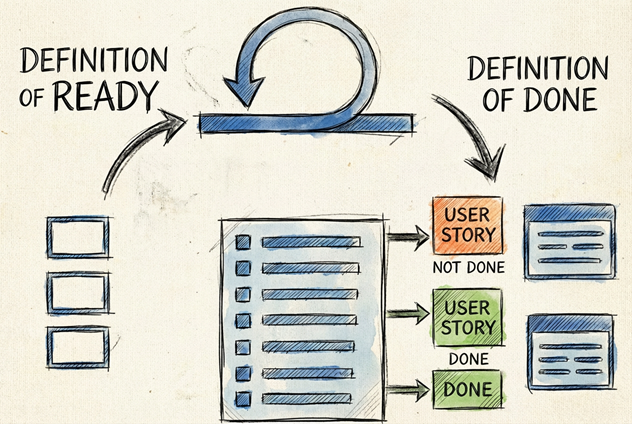

Minha última publicação sobre shift everywhere me fez lembrar e querer também falar um pouco dos conceitos DoR e DoD. São conceitos que vejo muito pelas redes quando falamos de qualidade, principalmente nas entregas, sejam elas pequenas ou grandes. Muitas vezes não nos damos conta de que os aplicamos no dia a dia, dentro da nossa equipe, mas é legal dar o nome aos bois para as coisas que nem sempre soubemos que têm nome.
Sabe aquela sensação de pegar uma tarefa para fazer e, no meio do caminho, perceber que faltam informações cruciais? Ou aquele clássico "terminei, só falta testar", que na verdade significa que ainda há um longo caminho pela frente? É exatamente para resolver isso que o Definition of Ready (DoR) e o Definition of Done (DoD) entram em cena.

DoR (Definition of Ready): O nosso combinado para começar bem
Pense no DoR como um filtro de qualidade antes de o trabalho começar. É um acordo que a equipe faz para definir o que uma tarefa precisa ter para ser considerada "pronta para ser desenvolvida". O objetivo é simples: garantir que, quando um desenvolvedor puxa uma tarefa, ele tenha tudo o que precisa para trabalhar com foco e sem interrupções desnecessárias.
É como planejar uma viagem: você não pega a estrada sem antes verificar o combustível, o destino no GPS e se as malas estão no carro. No desenvolvimento, a lógica é a mesma.
Exemplos de um checklist de DoR:
- A história de usuário está clara e o valor para o negócio é compreendido?
- Os critérios de aceitação estão definidos e são testáveis?
- O time já discutiu e estimou o esforço necessário?
- As dependências com outras equipes ou sistemas já foram mapeadas?
Ter um DoR claro evita que a equipe perca tempo com tarefas ambíguas e garante que o planejamento (refinamento) seja levado a sério.
DoD (Definition of Done): O nosso selo de "realmente pronto"
Se o DoR é sobre começar certo, o DoD é sobre terminar certo. Ele é o nosso acordo sobre o que significa "concluído". E não é um "concluído" qualquer, mas um que agrega valor real e atende a um padrão de qualidade definido por toda a equipe.
O DoD é um checklist que se aplica a todas as tarefas e garante que nada importante seja esquecido. Ele transforma o "na minha máquina funciona" em "está pronto para o cliente ver".
Exemplos de um checklist de DoD:
- O código foi revisado por pelo menos um outro colega (code review)?
- Os testes automatizados foram criados e estão passando?
- A funcionalidade foi validada pelo Product Owner (PO)?
- A documentação relevante foi atualizada?
- A entrega está em conformidade com os critérios de aceitação da tarefa?
O DoD é a nossa garantia de que o que entregamos é um incremento de software funcionando e de qualidade, não apenas um monte de código.
DoR e DoD vs. Critérios de Aceitação: Qual a diferença?
Aqui surge uma dúvida comum: qual a diferença entre esses conceitos e os Critérios de Aceitação (AC)? Os ACs são as regras específicas que definem o sucesso de uma única tarefa. Por exemplo: "O usuário deve conseguir fazer login com email e senha corretos".
A distinção é a seguinte:
- DoR e DoD: São acordos gerais da equipe, aplicados a todas as tarefas para garantir a qualidade do processo (DoR) e da entrega (DoD).
- Critérios de Aceitação (AC): São específicos para cada tarefa, detalhando o que ela deve fazer.
Pense assim: o DoR garante que os Critérios de Aceitação estejam claros antes de começar. E o DoD garante que a tarefa, além de cumprir seus próprios Critérios de Aceitação, também atenda a todos os outros padrões de qualidade da equipe.
Espero que essa reflexão ajude a clarear como essas práticas, que talvez você já use intuitivamente, podem ser formalizadas para trazer ainda mais fluidez e qualidade para o seu time.
Aconselho muito a ler a publicação da Maiara Feliceti lá no Medium. Ela usa ótimos exemplos para entender mais sobre DoR e DoD e assim você não perder tempo e aplicá-los.